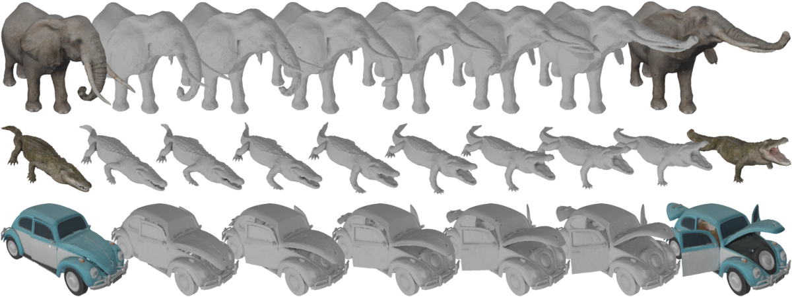
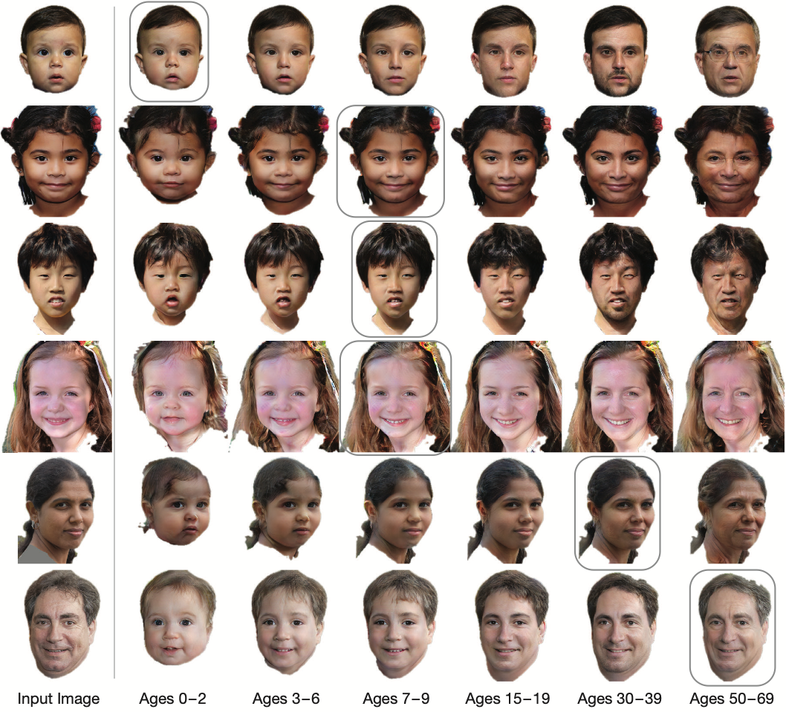
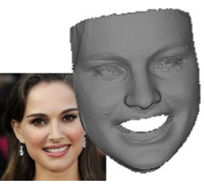
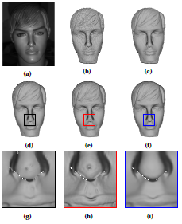
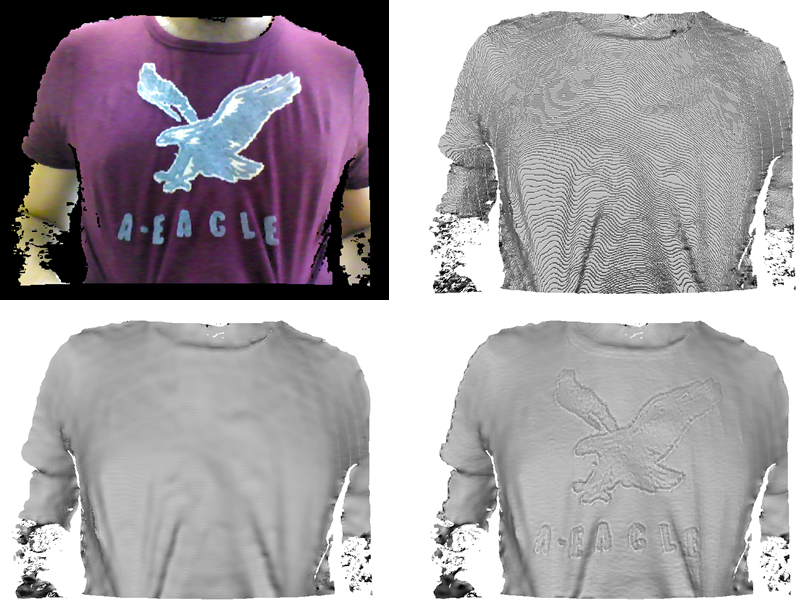
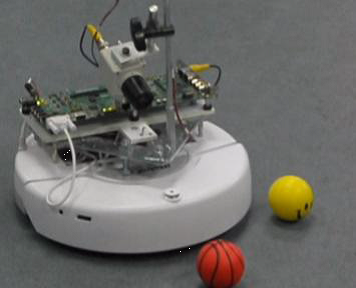

Roy Or-El
royorel at cs dot washington dot edu
I'm a Ph.D. student at the GRAIL lab in the University of Washington School of Computer Science and Engineering, advised by Prof. Ira Kemelmacher-Shlizerman. My research is in computer vision, focusing on 3D and 4D reconstruction and editing, neural rendering, and generative models. Previously I was a research assistant at the GIP Laboratory in the Computer Science Department at the Technion - Israel Institute of Technology, where I worked with Professors Ron Kimmel and Alfred M. Bruckstein on depth map refinement methods and 3D face reconstruction. I received my B.Sc. and M.Sc. (Cum Laude) from the Electrical Engineering department at the Technion in 2010 and 2015 respectively.
Publications



Learning Detailed Face Reconstruction from a Single Image
Paper

